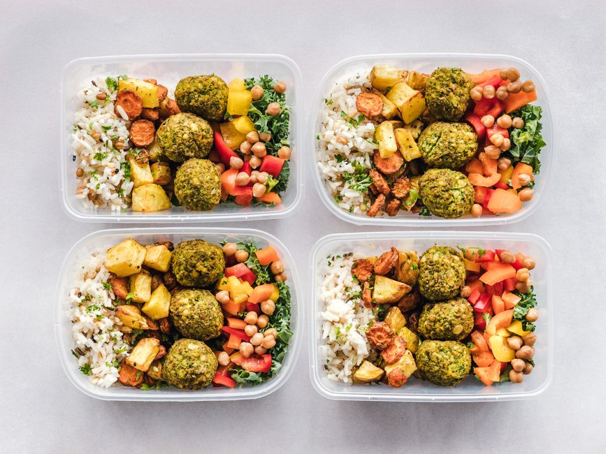

Trucos para optimizar tu presupuesto alimentario mientras estudias

Photo: Ella Olsson / Pexels
La comida es uno de los gastos donde más fácil resulta ahorrar. Estos hábitos sencillos te ayudan a gastar menos sin comer peor.
1. Planifica tus comidas
Dedica diez minutos a la semana a elegir comidas, revisar la despensa y hacer una lista. Comprarás menos por impulso y desperdiciarás menos.
2. Compara precios por unidad
Fíjate en el precio por kilo o por litro de la etiqueta. Los formatos grandes solo compensan si los consumes antes de que se estropeen.
3. Prefiere productos de temporada y congelados
Las frutas y verduras de temporada suelen ser más baratas. Las congeladas duran mucho y reducen el desperdicio.
4. Apuesta por legumbres y cereales
Lentejas, garbanzos, alubias, arroz y avena dan mucha comida por poco dinero. Sustituir parte de la carne por legumbres reduce la factura.
5. Prepara con antelación
Cocina raciones extra y congélalas. Así evitas comidas caras fuera de casa cuando tienes poco tiempo.
6. Entiende las fechas de los envases
«Consumir preferentemente antes de» indica calidad, no seguridad, así que un alimento suele poder comerse algo después. Pero nunca comas algo con moho, mal olor o aspecto sospechoso. Tira las sobras cocinadas guardadas más de dos o tres días.
7. Cocina lo básico en casa
Hacer tus propias salsas, sopas o aderezos cuesta menos que los productos preparados. Una sartén, una olla y un buen cuchillo bastan.
8. Aprovecha las ofertas sin dejarte engañar
Los descuentos sirven para productos que ya compras. Los cupones y las aplicaciones de los supermercados pueden ahorrar, pero no compres algo solo porque esté de oferta.
Estos hábitos te ayudan a comer mejor y a controlar tu presupuesto.